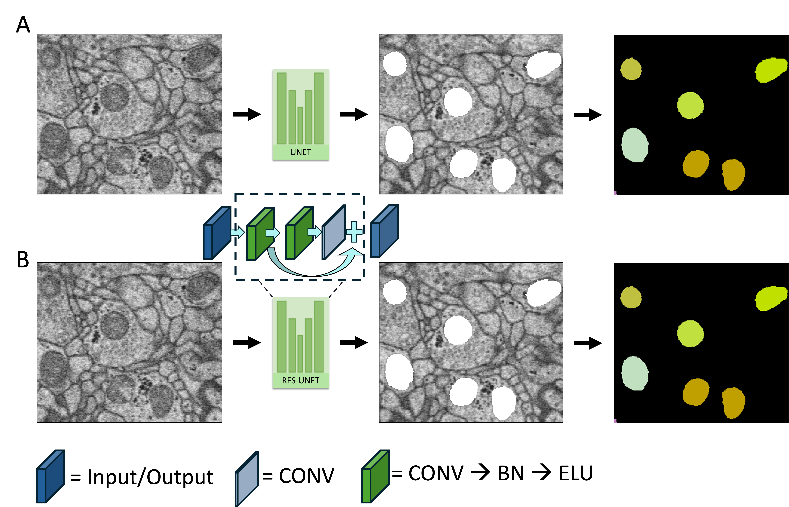

Mitochondria Segmentation¶
Short overview of what this module does and links to usage.
- Install & Usage: See the module's README and scripts in the GitHub repository for the most up-to-date instructions.
- Design Choices: See Design Choices for the "why" behind the "what".
What is mitochondria segmentation?¶
Mitochondria are often called the powerhouses of the cell. In neurons they are numerous, can span long stretches of neurites, cluster around synaptic junctions, and vary widely in shape and size.
In EM volumes, mitochondria segmentation is usually done in two conceptual stages, very similar to neuron segmentation:
-
Semantic segmentation
First we identify all voxels that belong to mitochondria, without worrying about which mitochondrion is which. This already gives us their localisation and overall shapes. Many projects stop here because they only need "mitochondrial tissue" vs "everything else". -
Instance segmentation
When individual identities matter (e.g. counting mitochondria per bouton, following a single mitochondrion along a neurite), we give each object a unique label. This can be done by: - watershed + agglomeration on the semantic mask, or
- panoptic / instance-style ML models that directly predict object instances.
The Catena mitochondria module is designed to support this two-stage view: produce robust semantic masks first, and then allow you to lift them to instance level when needed.

Why do we care?¶
Mitochondria carry a lot of useful information for connectomics:
-
Synaptic strength proxies
The number, size, and distribution of mitochondria have been linked to synaptic strength and metabolic demand at boutons and dendritic spines. Having good segmentation lets us quantify these relationships systematically. -
Cell-type and cell-state readouts
Mitochondrial morphology and abundance can act as a proxy for cell type
(e.g. Kuznetsov et al., 2009),
and even help control or report cell fate in certain contexts
(e.g. Lee-Glover et al., 2025).
Having mitochondria segmented in the same space as neurons and synapses opens the door to these integrative analyses. -
Filtering synapse false positives (Automating Proofreading)
Knowing where mitochondria sit relative to synapses helps us interpret or even veto suspicious synapse detections (for example, "synapses" that live entirely inside a mitochondrion-shaped blob are probably mistakes; "synapses" that do not have mitochondria nearby are probably not synapses).
In short, mitochondrial segmentation gives us both a quality control signal for synapses and neurons, and a rich set of biological features for downstream analyses such as cell typing, energy use, and plasticity.
Data curation¶
We use Empanada to generate ground-truth via fine-tuning the MitoNet model that performs panoptic segmentation.
Getting Started with Code¶
- Conda (for managing the Python environment)
Setup¶
- Clone the git and go to the dev branch.
bash git clone https://github.com/Mohinta2892/catena.git cd catena git checkout dev cd mitochondria_segmentation - Create and activate the Conda environment:
conda env create -n mito -f conda_env/torch_environment.yml
conda activate mito
Warning
The package has been developed and tested with python=3.8.13. However, it should work on newer versions of python too.
The dependencies for monai, torch, torch_metrics and zarr/h5py will need to be adjusted accordingly.
Adapt the config within the train and predict scripts¶
Note
The config schemes will change and be ultimately extracted out of the train and the prediction scripts. As this is still in dev phase, configs have been kept as it is now for easy debugging.
Train config¶
Please adjust the config params contained within the Args class as follows:
class Args:
def __init__(self):
self.exp_name = "mito_rsunet_from_scratch" # give your exp a name
self.train_zarr_dirs =
["/media/samia/DATA/mounts/fibserver1/smohinta_data/catena_data/HEMI_MITO/data_3d/train"] # you can pass more than 1 dir
self.test_zarr_dirs = [
"/media/samia/DATA/mounts/fibserver1/smohinta_data/catena_data/HEMI_MITO/data_3d/test"] # Or provide path for test set if available
self.label_type = 'neuron' # Options: neuron or mito. If neuron, labels expectecd to be saved like `volumes/labels/neuron_ids`, if mito: `volumes/labels/mito_ids`
self.epochs = 100
self.batch_size = 1 # Keep at 1 for now if visualizing, can increase for actual training
self.patch_size = [128, 128, 128]
self.stride = [64, 64, 64]
self.original_res = [8.0, 8.0, 8.0]
self.target_res = [8.0, 8.0, 8.0]
self.clahe = True
self.subsample_frac = 0.2
self.subsample_number = 0
self.subsample_seed = 27
self.balance_patches = True # Crucial for balancing
self.min_positive_pixels = 100 # Adjust based on your data visualization
self.learning_rate = 0.002
self.learning_rate_after_hotstart_50 = 0.002
self.loss_type = 'DiceCE' # Options DiceLoss / DiceCE (DiceCE is known to perform better)
self.loss_weights = 5.0 # Tune this based on pixel imbalance
self.rotation_augs = True
self.contrast_augs = True
self.model_loc = None # No pretrained model for training from scratch
self.freeze_encoder = False
self.hotstart = False
self.save_images = True # Set to True to save predicted images
self.eval_interval = 1 # Validation intervals
self.ckpt_interval = 25 # Model Checkpoint intervals
self.num_workers = 0 # Start with 0 for debugging in Jupyter. Increase for performance.
self.resume_checkpoint = "/media/samia/DATA/PhD/codebases/MitoEM/mito_rsunet_from_scratch/checkpoint_epoch_1.pth" # Path to a checkpoint file to resume training from or None
Important
All raw EM data is expected to be under "volumes/raw"
Labels are expected under "volumes/labels/neuron_ids" for neuron and "volumes/labels/mito_ids" for mito. However, if you have mitos saved under "volumes/labels/neuron_ids", set self.label_type = 'neuron'.
Predict config¶
class InferenceArgs:
def __init__(self):
# Path to the trained model weights (.pth file)
self.model_path = "/media/samia/DATA/PhD/codebases/MitoEM/mito_rsunet_from_scratch/best_model_IoU0.8577.pth" # <--- IMPORTANT: Update this path!
# Directory containing test Zarr files (can be multiple)
self.test_zarr_dirs = [
"/media/samia/DATA/mounts/fibserver1/smohinta_data/catena_data/HEMI_MITO/data_3d/test/"] # <--- IMPORTANT: Update this path!
self.label_type = 'neuron' # The type of label the model was trained for
# Model and Dataset parameters (must match training)
self.patch_size = [128, 128, 128] # Z Y X
self.stride = [64, 64, 64] # Z Y X (for inference tiling)
self.original_res = [8.0, 8.0, 8.0]
self.target_res = [8.0, 8.0, 8.0] # Prediction will be at this resolution
self.clahe = False # Must match training preprocessing
self.batch_size = 1 # Keep at 1 for simplicity in merging, or handle batch merging logic
self.num_workers = 0 # Use 0 for debugging, can increase for speed
# Output settings
self.output_dir = "inference_results_rsunet"
self.output_filename = "merged_predictions_hemi" # output filename, an extension will be automatically added based on if you choose tiff or zarr
self.output_format = "tiff" # "zarr" or "tiff"
self.model_type = "rs_unet" # "rs_unet" or "monai_unet"
[!Important] During inference set the path to the correct checkpoint and the directory which contains the zarr files. All raw EM data is expected to be under "volumes/raw".
Train Models¶
-
For training the Monai UNet after adjusting the config as above, please run:
python monai_unet_train.py -
For training the Monai UNet after adjusting the config as above, please run:
python rsunet_train.py
The training phase saves model checkpoints at intervals set with self.ckpt_interval and also for best IOU achieved during validation.
The training script also saved the losses and metrics as .npy files and should also log it to tensorboard under runs_{datetime} folder.
Infer with trained models¶
- For inferring with the Monai Unet after adjusting the config as above, please run:
python predict.py
Predict will save a tiff or zarr with semantic segmentation in your set self.output_dir.
If you only need semantic segmentation of mitochondria, you can use the saved segmentation.
Warning
We have only tested inference on relatively small datasets (not whole brains). However, the code has been developed to handle large datasets chunk by chunk. Chunk-size needs to be specified by the user. We will report further details once we have managed to run very large EM datasets.
Instance Segmentation of mitochondria masks¶
At this stage we run connected components over the binary semantic masks naively.
-
To run instance segmentation, first edit the config below contained with instance_segmenter.py.
class ConversionArgs: def __init__(self): # Path to your saved semantic prediction file (from inference script) self.input_prediction_path = "/media/samia/DATA/PhD/codebases/MitoEM/inference_results/merged_predictions_hemi_test.tif" # <--- UPDATE THIS self.output_instance_dir = "instance_results" self.output_format = "tiff" # "zarr" or "tiff" # Parameters for chunking self.chunk_size = (128, 128, 128) # Size of chunks to process self.overlap = (16, 16, 16) # Overlap between chunks (must be even for simple overlap) # Parameters for instance segmentation method (binary_connected) self.thres_foreground = 0.5 # Threshold for binarizing semantic prediction (0-1) self.thres_small_instances = 128 # Size threshold for removing small objects (pixels) self.scale_factors = (1.0, 1.0, 1.0) # Keep at 1.0 for no resizing self.remove_small_mode = 'background' -
Run the instance segmentation.
python instance_segmenter.py